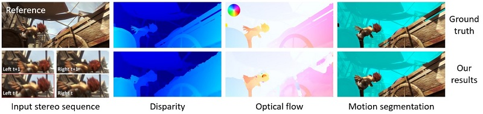

hide forever | hide once
hide forever | hide once
Fast Multi-frame Stereo Scene Flow
|
||||||||||||
| Tatsunori Taniai | Sudipta Sinha | Yoichi Sato | ||
| RIKEN AIP | Microsoft Research | The University of Tokyo |

Abstract -- We propose a new multi-frame method for efficiently computing scene flow (dense depth and optical flow) and camera ego-motion for a dynamic scene observed from a moving stereo camera rig. Our technique also segments out moving objects from the rigid scene. In our method, we first estimate the disparity map and the 6-DOF camera motion using stereo matching and visual odometry. We then identify regions inconsistent with the estimated camera motion and compute per-pixel optical flow only at these regions. This flow proposal is fused with the camera motion-based flow proposal using fusion moves to obtain the final optical flow and motion segmentation. This unified framework benefits all four tasks – stereo, optical flow, visual odometry and motion segmentation leading to overall higher accuracy and efficiency. Our method is currently ranked third on the KITTI 2015 scene flow benchmark. Furthermore, our CPU implementation runs in 2-3 seconds per frame which is 1-3 orders of magnitude faster than the top six methods. We also report a thorough evaluation on challenging Sintel sequences with fast camera and object motion, where our method consistently outperforms OSF [30], which is currently ranked second on the KITTI benchmark.